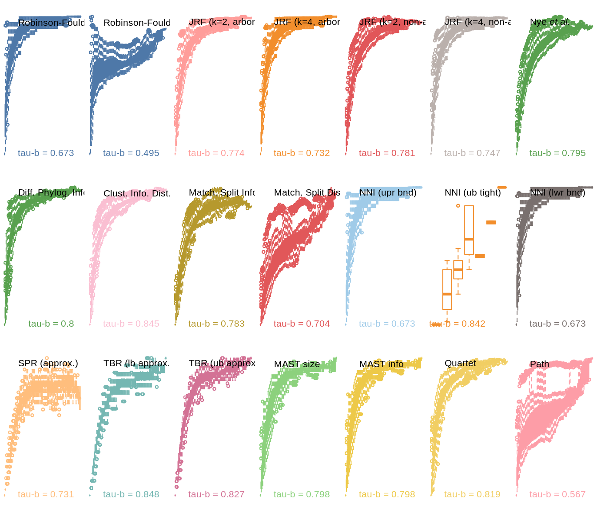

vignettes/spr-walking.Rmd
spr-walking.RmdSPR Walking: generating 100 trees with 50 tips. Start with a pectinate 50-leaf tree.
Each subsequent tree is one SPR rearrangement away from the previous one. Trees SPR rearrangements continue until a forest of 100 trees has been generated. Distances between each pair of trees are then calculated, and plotted against the number of SPR moves that separate the pair.

We then calculate the rank correlation between the measured tree distance and the number of SPR moves used to generate the trees – which may not correspond to the exact SPR distance, as one SPR move may ‘undo’ another.
Higher coefficients of correlation are, to a first approximation, desirable.
| r² | |
|---|---|
| Robinson-Foulds | 0.673 |
| Robinson-Foulds Info | 0.495 |
| JRF (k=2, arboreal) | 0.774 |
| JRF (k=4, arboreal) | 0.732 |
| JRF (k=2, non-arb.) | 0.781 |
| JRF (k=4, non-arb.) | 0.747 |
| paste(plain(“Nye”), italic(“et al.”)) | 0.795 |
| Diff. Phylog. Info | 0.800 |
| Clust. Info. Dist. | 0.845 |
| Match. Split Info Dist | 0.783 |
| Match. Split Dist. | 0.704 |
| NNI (upr bnd) | 0.673 |
| NNI (ub tight) | 0.842 |
| NNI (lwr bnd) | 0.673 |
| SPR (approx.) | 0.731 |
| TBR (lb approx.) | 0.848 |
| TBR (ub approx.) | 0.827 |
| MAST size | 0.798 |
| MAST info | 0.798 |
| Quartet | 0.819 |
| Path | 0.567 |